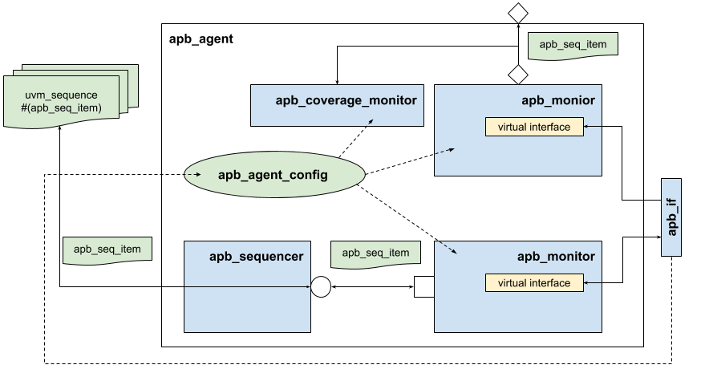

Overview
This UVC (UVM Verification Component) implements a simple APB bus agent. The agent consists of lower level components that yield initiating and monitoring bus transactions. The agent’s structure is captured in the figure below.
Components of the agent
The agent may operate in an active mode, in which it instantiates all the usual UVC comonents (driver, sequencer, monitor). In a passive mode, the agent instantiates only the monitor. The operation mode as well as other features are controlled through an agent’s configuration object (class apb_agent_config).
The agent may be paired with a UVM register model through an adapter class reg2apb_adapter.

Basic Use
The following code shows the basic integration of the APB agent into an environment.
class my_env extends uvm_env;
apb_agent_pkg::apb_agent m_apb_agent;
function void build_phase(uvm_phase phase);
apb_agent_pkg::apb_agent_config l_apb_agent_cfg;
// setup agent's configuration
l_apb_agent_cfg = ...
// instantiate the agent
uvm_config_db #(apb_agent_pkg::apb_agent_config)::set(this, "m_apb_agent*", "apb_agent_config", l_apb_agent_cfg);
m_apb_agent = apb_agent::type_id::create("m_apb_agent", this);
...
endfunction: build_phase
function void connect_phase(uvm_phase phase);
...
// Set up the agent sequencers as resources:
uvm_config_db #(apb_agent_pkg::apb_sequencer)::set(null, "*", "apb_sequencer", m_apb_agent.m_sequencer);
...
endfunction: connect_phase
endclass: my_env
Using Register Model
Some extra code is needed to pair the agent with a register model.
class my_env extends uvm_env;
my_env_config m_cfg; // environment config (includes a register model `my_rm`)
uvm_reg_predictor#(apb_agent_pkg::apb_seq_item) apb2reg_predictor; // we will use an explicit predictor
function void spi_env::build_phase(uvm_phase phase);
if(!uvm_config_db #(my_env_config)::get(this, "", "my_env_config", m_cfg)) begin
`uvm_error("build_phase", "Failed to find my_env_config")
end
...
// build apb_agent
...
// Build the register model predictor
apb2reg_predictor = uvm_reg_predictor #(apb_agent_pkg::apb_seq_item)::type_id::create("apb2reg_predictor", this);
...
endfunction:build_phase
function void connect_phase(uvm_phase phase);
if(m_apb_agent.m_cfg.active == UVM_ACTIVE) begin
apb_agent_pkg::reg2apb_adapter reg2apb;
reg2apb = reg2apb_adapter::type_id::create("reg2apb");
// Only set up register sequencer layering if the top level env
if(m_cfg.my_rm.get_parent() == null) begin
m_cfg.my_rm.APB_map.set_sequencer(m_apb_agent.m_sequencer, reg2apb);
end
// Replacing implicit register model prediction with explicit prediction
// based on APB bus activity observed by the APB agent monitor
// Set the predictor map:
apb2reg_predictor.map = m_cfg.my_rm.APB_map;
// Set the predictor adapter:
apb2reg_predictor.adapter = reg2apb;
// Disable the register models auto-prediction
m_cfg.my_rm.APB_map.set_auto_predict(0);
// Connect the predictor to the bus agent monitor analysis port
m_apb_agent.ap.connect(apb2reg_predictor.bus_in);
end
...
endfunction: connect_phase
endclass: my_env